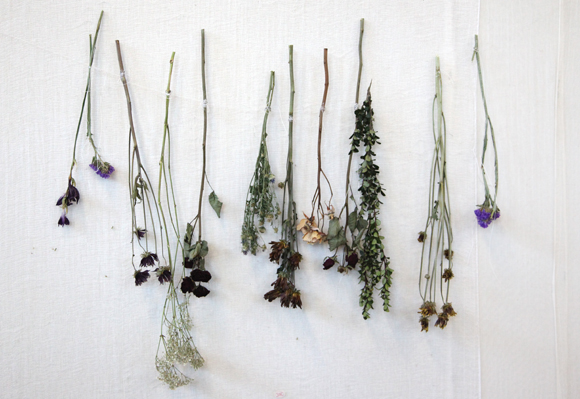
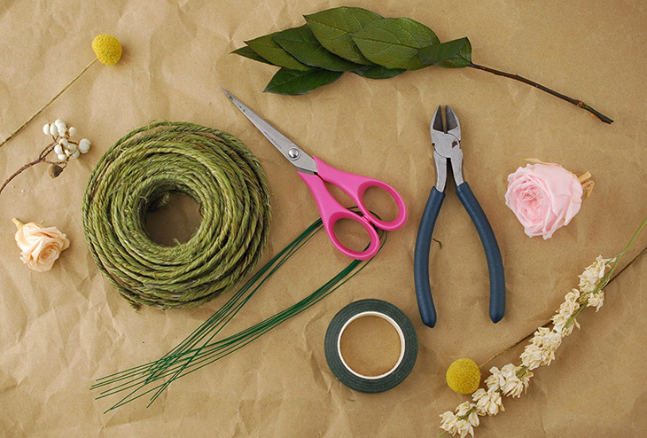
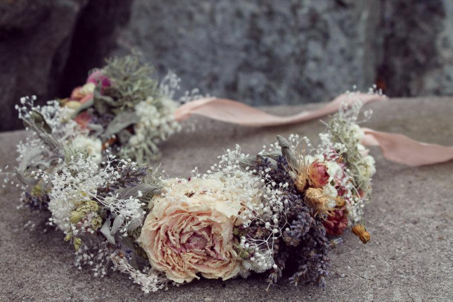
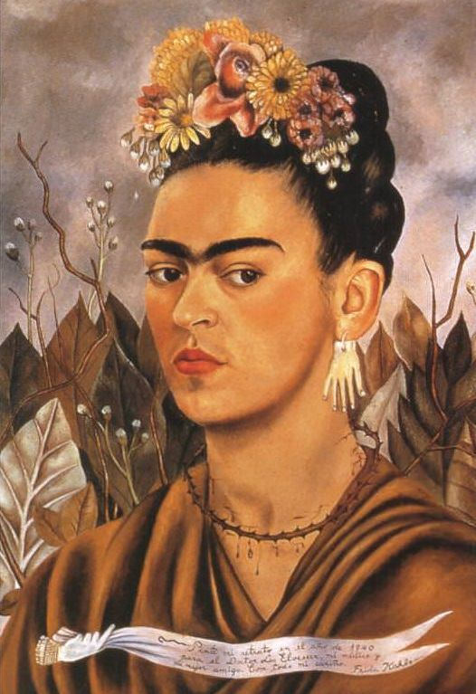

Time to Create!

the drying process
the table below presents some flower combo ideas to get you started!
|
Greens |
Filler 1 * |
Flower 2 |
Flower 1 |
Flower 2 |
| Crown 1 |
Eucalyptus |
Baby's Breath |
Scabiosa Pods |
Yellow Spray Rose |
Pink Carnation |
| Crown 2 |
Italian Ruscus |
Lavender |
Statice |
Thistle |
Dusty Purple Rose |
| Crown 3 |
Seeded Eucalyptus |
Wax Flower |
Poppy Pods |
Peach Carnation |
White Spray Rose |
*"Fillers" are somewhere inbetween a greens and flowers! add volume and texture to your overall piece!

materials
here we go!
- take roll of grapevine wire and fit a piece around your head
- cut grapevine wire to fit and twist ends together to create circular crown base
- cut any long stems off dried prodcuts you plan to use (so they are approx. 1 IN long)
- tear a fairly long piece of floral tape to work with as you begin to attach your dried materials to your base
- wrap the tape around the grapevine wire base added flowers, fillers, and greens as you tape
- continue to add dried materials until you feel your crown has acheived your creative vision
- weave ribbon around the entirety of the crown to hide tape and add interest

a complete crown
Channel your inner Frida!

a complete crown
Self Portrait, Dedicated to Dr Eloesser by Frida Kahlo. Painted in 1940.